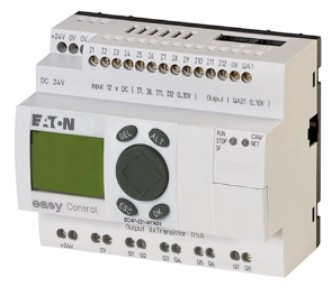
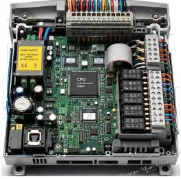
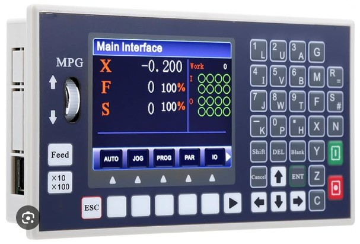

At Cynex Systems, we provide engineering-oriented solutions for industrial control, automation, electrical systems, and mechatronic applications. Industrial control units are essential for monitoring operating conditions, processing input signals, executing control commands, and coordinating machinery and equipment. Different applications require different levels of control, processing capability, and communication. From simple machine controllers to programmable automation systems and customized electronic units, selecting the right solution helps improve reliability, operational efficiency, and cost-effectiveness. Cynex Systems can help evaluate suitable controllers according to each project's requirements, including sensors, motors, input/output signals, communication interfaces, operating conditions, and budget. Where standard products are insufficient, customized control solutions and electrical integration can also be considered.
Programmable Logic Controllers (PLC)
Programmable Logic Controllers (PLCs) are widely used to automate industrial machinery and production processes. They receive signals from sensors and switches, execute programmed instructions, and control motors, valves, relays, and other equipment. Available in compact and modular configurations, PLCs can support applications ranging from individual machines to complex automation systems. Cynex Systems can help select suitable PLCs based on input/output requirements, communication protocols, expansion capabilities, and compatibility with existing equipment. We can also evaluate electrical interfaces and control panel integration to identify a practical, cost-effective solution for your application.
Microcontroller-Based Industrial Control Units
Microcontroller-based control units are designed for dedicated control functions in industrial equipment, embedded systems, and specialized machinery. They are particularly useful when compact dimensions, application-specific functions, and customized electronic control are required. Depending on the design, these units can process sensor signals, manage timing, control motors, and communicate with other devices. Cynex Systems can assess the feasibility of customized microcontroller solutions, including electronic circuit design, component selection, input/output interfaces, and integration with motors and sensors. Our goal is to identify a suitable solution that meets the project's technical requirements without unnecessary complexity or expense.
Motion Controllers and Motor Control Units
Motion controllers coordinate the movement of servo motors, stepper motors, and other compatible actuators. Depending on their capabilities, they can control position, speed, acceleration, and movement sequences in CNC machines, automated positioning systems, and industrial equipment. Cynex Systems can help select compatible controllers, motor drives, feedback devices, and communication interfaces according to the required motion performance. For specialized applications, we can also evaluate customized control interfaces and integration with mechanical assemblies to achieve reliable, precise, and cost-effective motion control.
Human-Machine Interface (HMI) and Operator Control Units
Human-Machine Interface (HMI) units allow operators to monitor and interact with industrial machinery through displays, touchscreens, buttons, and other controls. Depending on the system, they can display operating conditions, alarms, process values, and adjustable parameters. HMIs generally work alongside a PLC or another compatible controller. Cynex Systems can help identify suitable interfaces based on display requirements, communication compatibility, operating environment, and required functions. We can also evaluate control panel design, electrical connections, and integration with existing machinery to support convenient operation and effective monitoring.
Customized Industrial Electronic Controllers
Some applications require specialized control functions that standard products cannot fully provide. Customized industrial electronic controllers can combine microcontrollers, electronic circuits, sensor inputs, motor interfaces, and communication modules to meet specific machine requirements. Depending on project scope and technical feasibility, Cynex Systems can help define control specifications, evaluate standard and customized alternatives, and develop suitable electrical and electronic interface concepts. These solutions can be considered for specialized industrial equipment, automated devices, and mechatronic projects where functionality, dimensions, compatibility, and cost must be carefully balanced.


